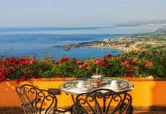

The climate of Tuscany (Italy) Tuscany is centrally located in Italy. In this region the following places are situated: Florence, Pisa, Siena, Lucca, San Gimignano, Volterra and Maremma. Tuscany is one of the most beautiful regions in Italy and known for its landscape. Several famous wines originate in this region: Chianti, Morellino di Scansano and the Brunella di Montalcino. Literature, paintings, architecture and sculpture can all be admired in Tuscany. Dozens of museums can be visited. However, you can also spend an active holiday in Tuscany. There are many possibilities for walking and cycling. The best time to do this is in spring. During the winter the weather is unstable. Summers are hot and dry. During spring temperatures are pleasant at 20 degrees Celsius on average. The climate in Tuscany is influenced by the warm current from the Mediterranean Sea and its leeward situation in relation to Corsica. This may cause large differences in weather in this region. This depends on the altitude and the location in relation to the hills and the sea. In general Tuscany has a pleasant climate.
Roughly triangular in shape, Tuscany borders the regions of Liguria to the northwest, Emilia-Romagna to the north, Marche and Umbria to the east, and Lazio to the south and southeast. The comune (municipality) of Badia Tedalda, in the Tuscan Province of Arezzo, has an exclave named Ca' Raffaello within Emilia-Romagna. Tuscany has a western coastline on the Ligurian Sea and the Tyrrhenian Sea, among which is the Tuscan Archipelago, of which the most significant island is Elba. Tuscany has an area of approximately 22,993 square kilometres (8,878 sq mi). Surrounded and crossed by major mountain chains and with few (but fertile) plains, the region has a relief that is dominated by hilly country used for agriculture. Hills make up nearly two-thirds (66.5%) of the region's total area, covering 15,292 square kilometres (5,904 sq mi), and mountains (of which the highest are the Apennines), a further 25%, or 5,770 square kilometres (2,230 sq mi). Plains occupy 8.4% of the total area—1,930 square kilometres (750 sq mi)—mainly around the valley of the Arno. Many of Tuscany's most significant cities lie on the banks of the Arno, including the capital, Florence, Empoli, and Pisa. The climate is fairly mild in the coastal areas, and is harsher and rainy in the interior, with considerable fluctuations in temperature between winter and summer,[11] giving the region a soil-building active freeze-thaw cycle, in part accounting for the region once having served as a key breadbasket of ancient Rome
Tuscany has an immense cultural and artistic heritage, expressed in the region's churches, palaces, art galleries, museums, villages, and piazzas. Many of these artifacts are found in the main cities, such as Florence and Siena, but also in smaller villages scattered around the region, such as San Gimignano
Chianti is a famous red wine produced in the Tuscany region of Italy. It is made primarily from Sangiovese grapes and is known for its rich, fruity flavors and moderate tannins.
Morellino di Scansano is another popular red wine from Tuscany, made primarily from Sangiovese grapes. It is known for its smooth and velvety texture, with flavors of cherry and plum.
Brunello di Montalcino is a prestigious red wine produced in the Montalcino region of Tuscany. It is made from 100% Sangiovese grapes and is aged for several years to develop complex flavors of dark fruit, spice, and leather.